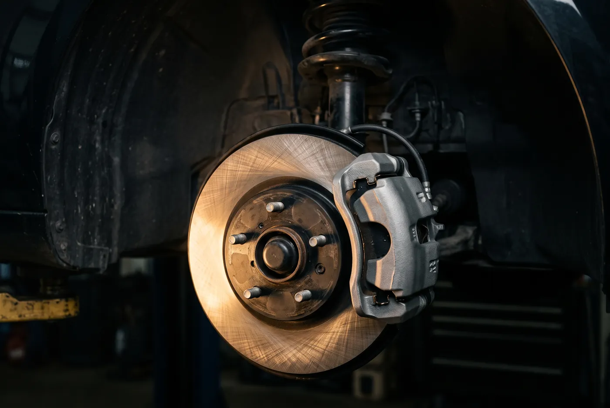
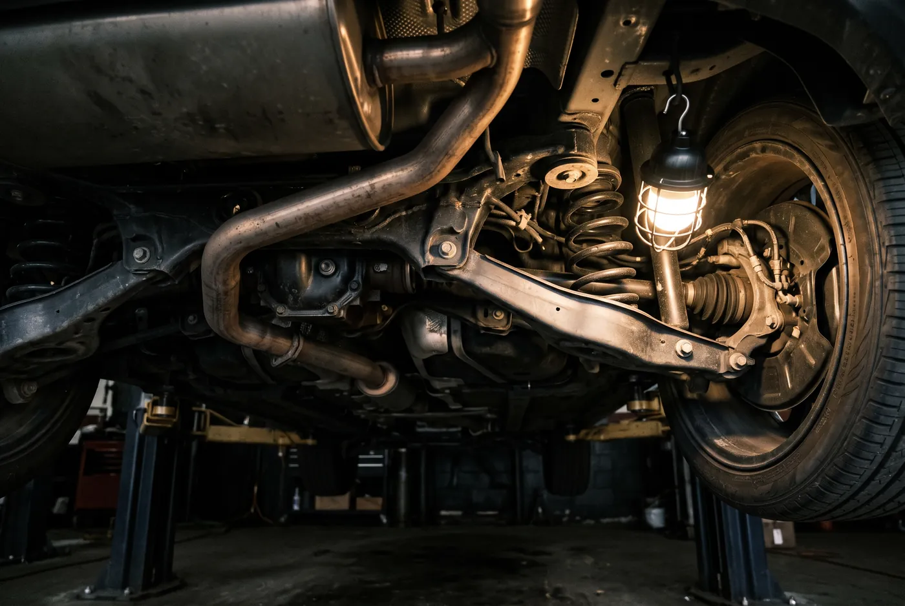
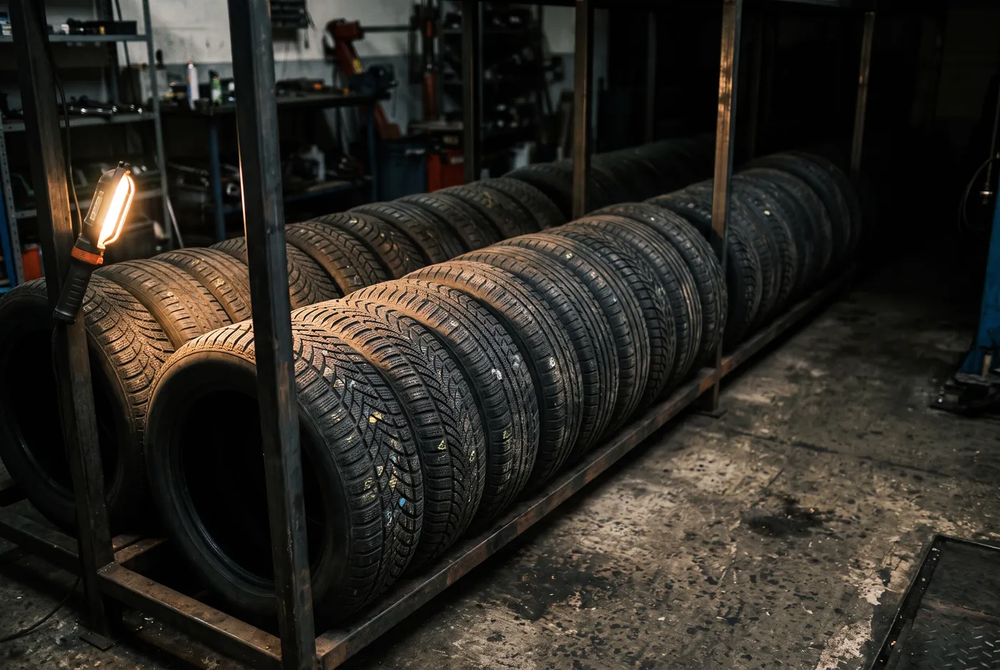
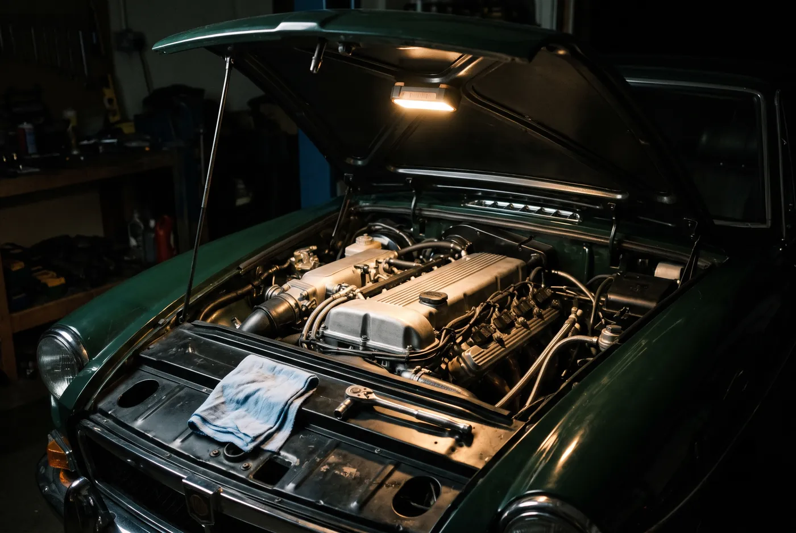
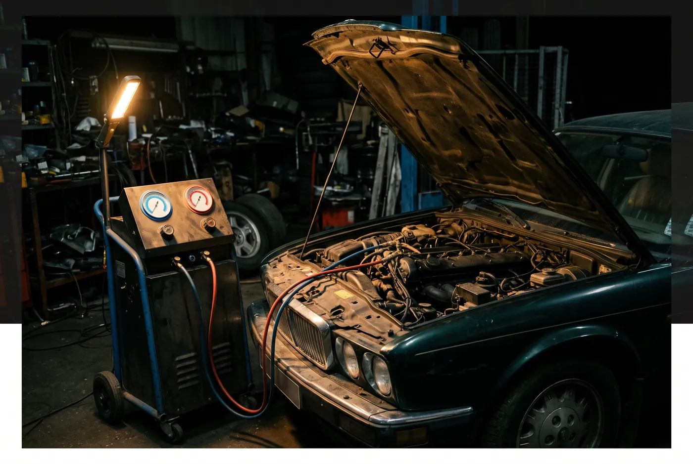
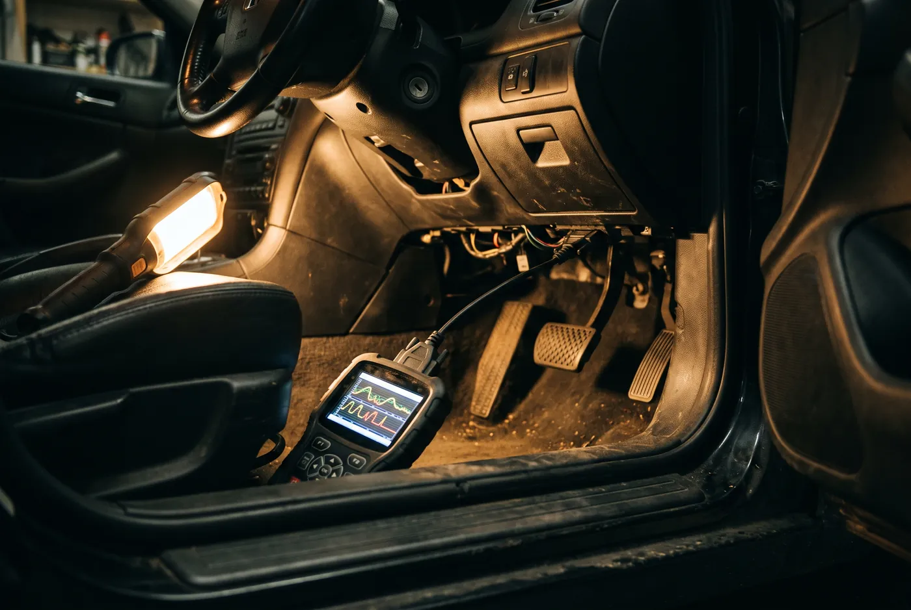

Posvítíme si na to.
Autodílna Na Zvedáku v Liberci. Servis, pneu a diagnostika pro všechny značky.
Jsme malá dílna se dvěma zvedáky. Než cokoli vyměníme, ukážeme vám starý díl a řekneme cenu.
- Všechny značkyosobní auta a dodávky do 3,5 t
- Cena předembez vašeho souhlasu nic neměníme
- Náhradní autona dobu opravy, když ho potřebujete
Co opravujeme
Posvítíme si na každý díl.
-

01 / 06Brzdy a podvozek
Destičky, kotouče, tlumiče, čepy a geometrie. Brzdy zkontrolujeme při každé návštěvě.
-

02 / 06Příprava na STK
Auto projdeme zespodu i shora, závady opravíme a na technickou s ním zajedeme za vás.
-

03 / 06Pneuservis a uskladnění
Přezutí, vyvážení, oprava defektu. Sadu vám přes sezónu uložíme u nás.
-

04 / 06Motor a rozvody
Olej a filtry, rozvody, spojka, turbo. Díly dáváme takové, jaké bychom dali do svého auta.
-

05 / 06Klimatizace
Plnění, dezinfekce a hledání úniků. Nejlépe na jaře, než přijdou vedra.
-

06 / 06Diagnostika
Svítí kontrolka? Načteme chyby a změříme, co je opravdu vadné, než začneme měnit díly.
Jak to u nás chodí
Zavoláte
Řeknete, co auto dělá, a domluvíme den. Většinou do týdne.
Přivezete auto
Ráno od sedmi. Když nestíháte, klíče hodíte do schránky u vrat.
Ozveme se
Do odpoledne voláme, co jsme našli a kolik oprava stojí. Rozhodnete vy.
Odjedete
Ukážeme vám vyměněné díly, dostanete fakturu a záruku na práci.
Objednejte se telefonem
+420 123 456 789
Otevřeno
- Pondělí až pátek
- 7:00–17:00
- Sobota
- 8:00–12:00
- Neděle
- zavřeno
Kde nás najdete
Autodílna Na Zvedáku
Dílenská 14, Liberec
vjezd ze dvora, parkování před vraty
Napište
dilna@nazvedaku.example
Odpovídáme do druhého dne.